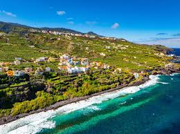

La Palma, oficjalnie znana jako San Miguel de la Palma, to hiszpańska wyspa położona na Oceanie Atlantyckim, w archipelagu Wysp Kanaryjskich. Znajduje się ona w pobliżu północno-zachodnich wybrzeży Afryki i, podobnie jak cały archipelag, jest częścią Makaronezji. Wyspa zajmuje powierzchnię 708 km², mierząc 42 km długości i 28 km szerokości, co czyni ją piątą co do wielkości wyspą w archipelagu. Administracyjnie podlega prowincji Santa Cruz de Tenerife. Stolicą La Palmy jest Santa Cruz de La Palma, usytuowana na wschodnim wybrzeżu. Największym miastem wyspy jest Los Llanos de Aridane, położone na zachodnim wybrzeżu. Językiem urzędowym jest hiszpański. Populacja wyspy wynosi 86 528 mieszkańców.